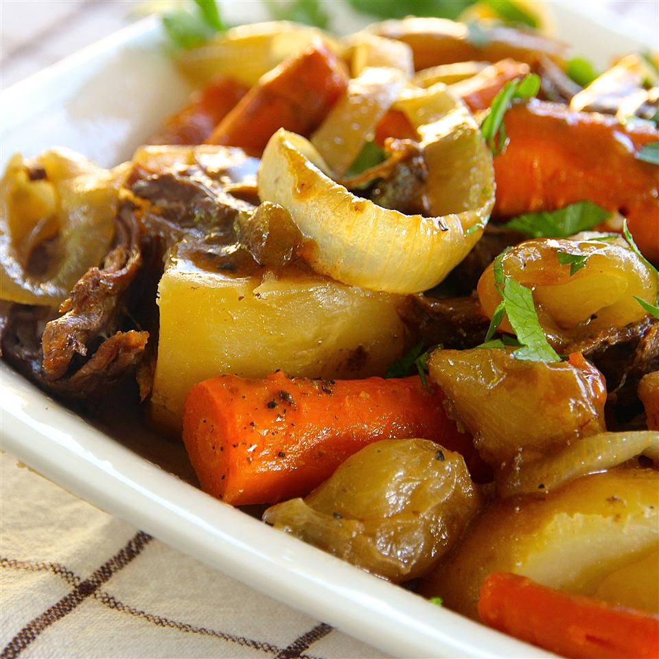

Pot Roast

Focaccia flatbread is topped with roasted persimmon slices, burrata cheese, and rosemary for a sweet and savory lunch or appetizer.
- 1 tablespoon vegetable oil
- 1 (4 pound) beef pot roast
- 1 tablespoon brown sugar
- 1 tablespoon salt
- 1 tablespoon dry mustard
- ¼ teaspoon black pepper
- 3 large potatoes, quartered
- 3 carrots, peeled and cut into 2-inch pieces
- 1 onion, sliced
- ⅓ cup vinegar
- ⅓ cup water
- Preheat the oven to 350 degrees F (175 degrees C). Line a baking sheet with parchment paper.
- Lay persimmon slices onto the prepared baking sheet. Drizzle with 2 teaspoons olive oil and sprinkle salt on top. Sprinkle 1/2 the rosemary leaves over the persimmon slices.
- Roast in the preheated oven for 20 minutes. Turn persimmon slices over and roast 10 minutes more.
- Remove baking sheet from the oven and increase temperature to 200 degrees C. Place focaccia on a baking sheet.
- Bake focaccia in the hot oven until warmed through, about 5 minutes. Remove from oven and top focaccia with roasted persimmon slices. Tear burrata cheese using your hands and lay evenly on the focaccia, avoiding the persimmon slices. Reserve about 1 tablespoon rosemary leaves and sprinkle the rest on top.
- Return focaccia to the hot oven and bake until warmed and burrata cheese has melted slightly, about 5 minutes. Top with reserved fresh rosemary leaves and drizzle remaining 2 teaspoons olive oil on top. Slice and serve hot.